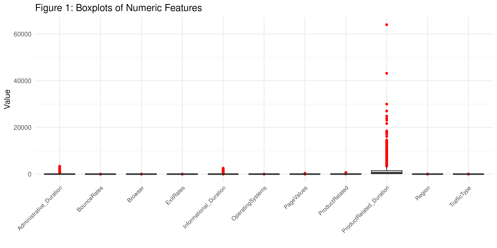
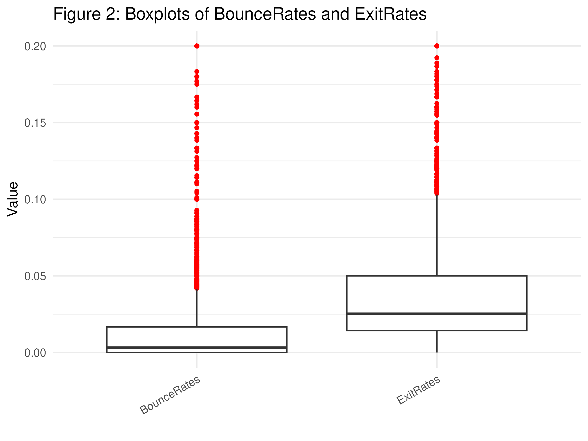
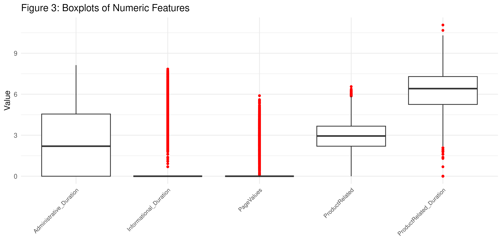
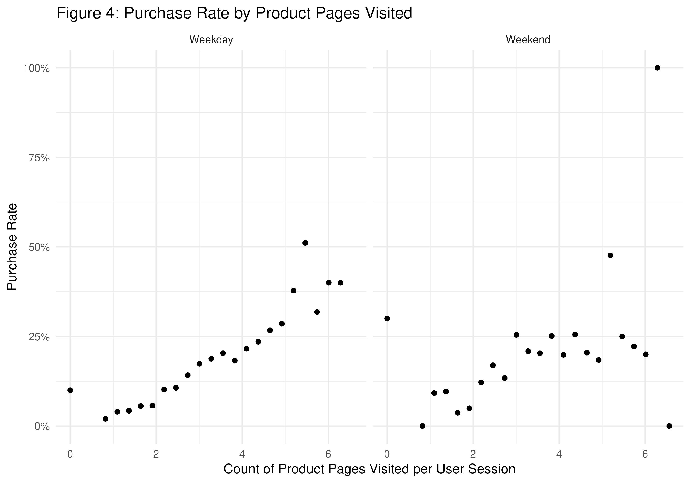
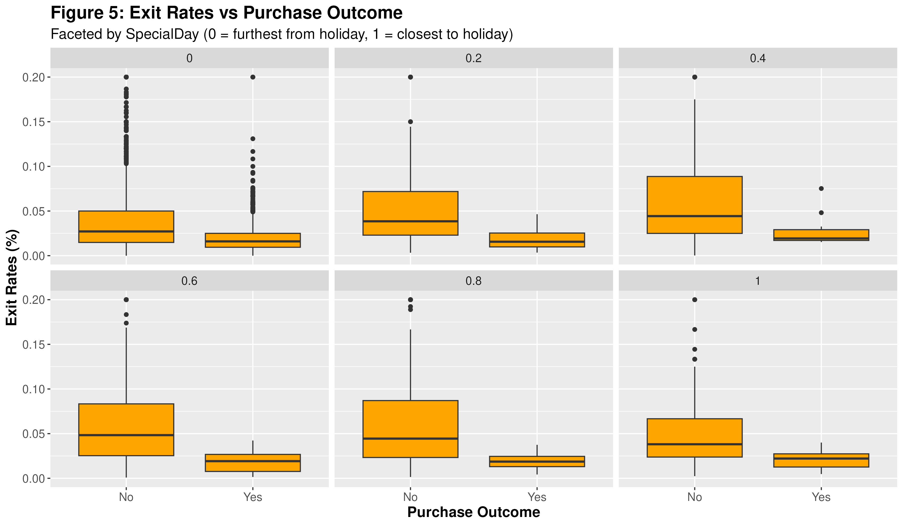
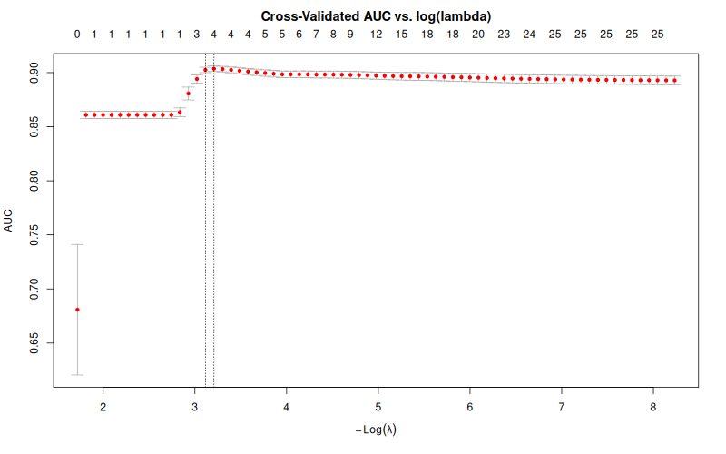
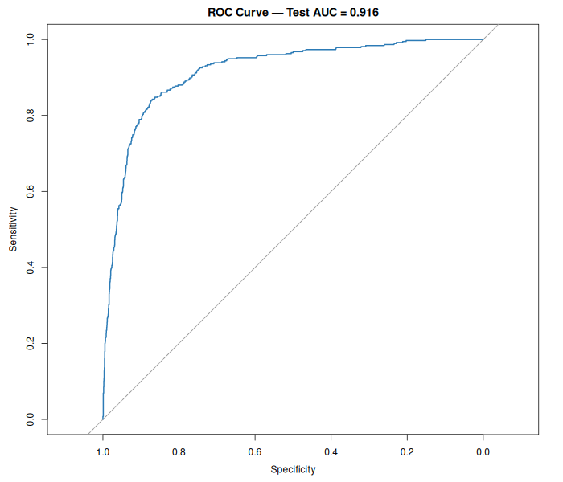

| Metric | Value |
|---|---|
| CV AUC (lambda.min) | 0.9036 |
| Test AUC | 0.9161 |
| Test Accuracy | 0.8788 |
| Test Precision | 0.8065 |
| Test Recall | 0.2667 |
| Test F1 | 0.4008 |
DSCI 310 Group 4 Data Analysis Project - Predicting Consumer Online Purchasing Behavior
Predicting Online Purchasing Behaviour Using LASSO Logistic Regression
Summary
In this project we try to predict whether an online shopping session will end in a purchase. That’s useful for understanding which users are likely to buy and for supporting efforts on how to improve conversion rates and user experience.
We use the UCI Online Shoppers Purchasing Intention dataset. It’s public and has about 12,330 sessions. Each row is one session, and we have information on how many admin vs product pages they saw, time on site, bounce and exit rates, and session data like month and whether it was a weekend. The target variable is Revenue which is a binary variable, indicating whether the session ended in a purchase. We downloaded the data from the web, cleaned it up (factors, missing values, etc.), and did an 80/20 train–test split.
We did some EDA with summary tables and visualizations, then fit a Lasso logistic regression and looked at the confusion matrix and ROC curve.
The model gets 0.916 AUC and 0.806 precision on the test set. It is very reliable when predicting a purchase but struggles to find them all (0.267 recall). This corresponds to a very precise but low sensitivity model.
Introduction
Understanding what drives a visitor to complete a purchase is a central challenge in e-commerce. While generating web traffic is relatively easy, converting visits into sales relies on a complex combination of browsing behavior, timing, and user intent. Being able to predict whether a given session (before it ends) will result in revenue would enable online retailers to intervene in real time, personalize experiences, and allocate marketing resources more effectively (C. O. Sakar et al. (2019) and Esmeli, Bader-El-Den, and Abdullahi (2021)).
In this project, we aim to answer the question: Can we predict whether an online shopping session will result in a purchase based on the behavioral and contextual features recorded during that session?
To address this, we utilize the Online Shoppers Purchasing Intention Dataset, sourced from the UCI Machine Learning Repository (C. Sakar and Kastro (2018)). This dataset contains 12,330 sessions collected from an e-commerce website over the course of one year. Each session is characterized by 17 features, which fall into three categories: page interaction metrics (e.g., the number of product-related pages visited and the time spent on each page type), web analytics signals (e.g., bounce rate, exit rate, and page value), and session context (e.g., month, whether the visit occurred on a weekend, visitor type, operating system, browser, region, and traffic source). The binary target variable, “Revenue,” indicates whether the session ended in a transaction.
The dataset exhibits a notable class imbalance: approximately 84.5% of sessions did not result in a purchase, with only 15.5% ending in revenue. This imbalance is common in real-world e-commerce data and must be considered when evaluating model performance.
We frame this as a binary classification problem and train a LASSO logistic regression model using the glmnet package in R. LASSO (Least Absolute Shrinkage and Selection Operator) is chosen for its ability to perform automatic feature selection by shrinking less informative coefficients to zero (Li, Hsu, and Alzheimer’s Disease Neuroimaging Initiative (2022)). This capability is particularly valuable given the mix of numeric, ordinal, and high-cardinality categorical features present in the dataset.
Before modeling, we conduct exploratory data analysis to assess feature distributions, class balance, and the relationships between key predictors and purchase outcomes. Categorical features with sparse levels are consolidated into an “Other” category, and right-skewed numeric features are log-transformed to reduce the impact of extreme outliers. The optimal regularization parameter, λ, is selected through cross-validated AUC.
We evaluate model performance using the AUC-ROC on a held-out test set (20% of the data), along with a confusion matrix to examine precision and recall for the minority (purchase) class.
Methods and Results
Dataset Description
To start off the analysis, we can examine the available features in the data. This information is referenced from the official data source (UCI Machine Learning Repository: Online Shoppers Purchasing Intention Dataset). Each row/data point represents one user session.
| Feature | Type | Feature Description |
|---|---|---|
| Administrative | Integer | Number of administrative pages viewed per session |
| Administrative_Duration | Integer | Total time spent on administrative pages per session |
| Informational | Integer | Number of informational pages viewed per session |
| Informational_Duration | Integer | Total time spent on informational pages per session |
| ProductRelated | Integer | Number of product related pages viewed per session |
| ProductRelated_Duration | Continuous | Number of product related pages viewed per session |
| BounceRates | Continuous | Inverse of engagement rate (From Google Analytics) |
| ExitRates | Continuous | Last page before stopping the user session (From Google Analytics) |
| PageValues | Integer | Average value each page contributes to the user session (From Google Analytics) |
| SpecialDay | Integer | Closeness of the site visited date to a “special date” where purchase are more likely |
| Feature | Feature Description |
|---|---|
| Month | Month of session |
| OperatingSystems | Operating system used for session |
| Browser | Browser used for session |
| Region | Geographic region of session |
| TrafficType | Traffic source of session (banner, direct, SMS, etc.) |
| VisitorType | Visitor type of session (New, Returning, etc.) |
| Weekend | Binary value indicating the session occurred on a weekend |
| Target Variable | Variable Description |
|---|---|
| Revenue | Binary class label indicating whether the user session ended in a purchase |
Knowing the expected data types of each feature, we can proceed with data cleaning to prepare for EDA and analysis.
Dataset Cleaning
Before exploratory analysis, we preprocess the raw online shopping dataset so that variable types are consistent and ready for plotting and modeling.
Data type preparation
The dataset contains both numerical and categorical predictors. To avoid treating category labels as continuous values, we convert key categorical columns to factors. We also encode the target variable Revenue as a factor (No, Yes) for binary classification.
| Variable | Raw Type | Converted To |
|---|---|---|
| Revenue | Logical/Character | Factor (No, Yes) |
| Month | Character | Factor |
| OperatingSystems | Integer | Factor |
| Browser | Integer | Factor |
| Region | Integer | Factor |
| TrafficType | Integer | Factor |
| VisitorType | Character | Factor |
| Weekend | Logical | Factor |
Rows with missing values are dropped, and unused factor levels are removed via droplevels().
Transformation of skewed variables
Several engagement variables are strongly right-skewed in their raw form. To reduce skewness and improve interpretability in downstream plots (e.g., in EDA), we apply log1p transformations to:
| Variable | Reason for Transformation |
|---|---|
| Administrative_Duration | Right-skewed; compresses extreme values |
| Informational_Duration | Right-skewed; compresses extreme values |
| PageValues | Right-skewed; compresses extreme values |
| ProductRelated | Right-skewed; compresses extreme values |
| ProductRelated_Duration | Right-skewed; compresses extreme values |
This transformation keeps zero values valid while compressing extreme values.
Derived variables for analysis
For purchase-rate visualizations, we create a binary indicator:
| Variable | Description |
|---|---|
| Revenue_num | Binary indicator: 1 = purchase, 0 = no purchase (used for purchase-rate plots) |
This allows us to summarize purchase probability across bins of browsing activity and compare behavior between weekday and weekend sessions.
Output for downstream analysis
After cleaning and transformation, the data are split into training and test sets and written to CSV files for EDA and modeling:
| Output File | Description |
|---|---|
| shoppers_train.csv | Training subset (~80% of cleaned data) |
| shoppers_test.csv | Test subset (~20% of cleaned data) |
The split uses a default proportion of 0.8 for training and 0.2 for testing, with random seed 310 for reproducibility.
EDA
To start off, let us explore the extent of outliers in the numerical features through boxplots. We know that BounceRates and ExitRates are much smaller in magnitude than the other features so we plot them separately.


From the boxplots in Figure 1, it appears that the outliers severely skew the numerical features in the training set. This can affect the linearity of the model so we will apply a log1p(x) transformation to the numerical features. We exclude BounceRates and ExitRates since the skew is not as severe.

After applying the transformation, the plots appear more centred though there are still a few rough spots. This should be sufficient to continue the analysis. Next, we would like to explore some obvious trends. We will first isolate variables of interest and develop some visualizations.
One interesting trend is examining how purchase rates vary by the number of visits to product related pages. We can enhance the visualization by examining if the trend is consistent across weekends and weekdays.

From Figure 4, it appears that there is a positive trend between purchase rate and number of product pages visited. It is also consistent across weekends and weekdays. This is expected since users may feel more attracted to a purchase the longer they engage with the website. It could very well also be because users need to engage with the website longer to compare options when a decision to purchase has already been made. Next, we can explore how exit rates directly affect the purchase outcome and compared across.

From Figure 5, it appears that there is a strong correlation between a high exit rate and the decision not to purchase. This is displayed by the median of the box plots being consistently higher in the “No” purchase outcome than the “Yes” purchase outcome. This could be because the decision to purchase has already been made before ending the user session. The plots also appear to have increase variance and gap between medians as it gets closer to a “special day”.
This concludes the EDA and allows us to move on to the Analysis section to build the LASSO Logistic Regression model.
Methods and Results — Modelling
LASSO Logistic Regression
With the cleaned and preprocessed training data in hand, we fit a LASSO (Least Absolute Shrinkage and Selection Operator) logistic regression model using the glmnet package in R (Li, Hsu, and Alzheimer’s Disease Neuroimaging Initiative (2022)). LASSO is well suited to this dataset because the L1 penalty it applies during fitting can shrink the coefficients of irrelevant or redundant features exactly to zero, performing automatic feature selection alongside estimation. This is particularly useful given that our feature matrix — after one-hot encoding all categorical variables — is moderately high-dimensional.
Before fitting, all numeric features are standardized (mean zero, unit variance) using parameters computed only from the training set. This is a critical step to prevent data leakage: the same training-set means and standard deviations are applied to the test set, so the model never indirectly learns from test data during preprocessing.
We select the optimal regularization parameter, λ, through 10-fold cross-validation, maximizing the area under the ROC curve (AUC) as the selection criterion. Figure 6 shows how cross-validated AUC changes across the regularization path. The vertical dashed line marks the value of λ that maximizes AUC (lambda.min), which is used to fit the final model on the full training set.

Model Evaluation
The final model is evaluated on the held-out 20% test set. We report four complementary metrics in Table 8: test AUC, accuracy, precision, and recall. Because the dataset is class-imbalanced (~84.5% non-purchase sessions), accuracy alone would be misleading; AUC and recall for the minority (purchase) class are the more informative indicators of real-world performance.
The ROC curve for the test set is shown in Figure 7. The curve traces the trade-off between true positive rate (sensitivity) and false positive rate (1 − specificity) across all classification thresholds, with a larger area under the curve indicating better discriminative ability. A random classifier would follow the diagonal dashed line (AUC = 0.5).

Table 9 shows the confusion matrix, breaking down the model’s predictions into true positives, true negatives, false positives, and false negatives. This reveals how the model balances identifying purchase sessions (the positive class) against avoiding false alarms.
| Predicted | No | Yes |
|---|---|---|
| No | 2067 | 275 |
| Yes | 24 | 100 |
Selected Features
Table 10 lists the features retained by LASSO (i.e., those with non-zero coefficients after regularization), ranked by absolute coefficient magnitude. A positive coefficient indicates a feature associated with a higher predicted probability of purchase, while a negative coefficient is associated with a lower probability.
| Feature | Coefficient |
|---|---|
| PageValues | 0.9504 |
| MonthNov | 0.1520 |
| ProductRelated | 0.0707 |
| ExitRates | -0.0540 |
Discussion
Key Metrics
We use a few key metrics in this analysis: AUC, precision, recall, and accuracy. Here is a quick discussion on each: - AUC: Area under ROC curve represents the probability that the model ranks a random positive example higher than a random negative example - Precision: The proportion of positive identifications that were actually correct - Recall: The proportion of actual positives that were identified correctly - Accuracy: The overall proportion of correct predictions
Summary of Findings
Our LASSO logistic regression model demonstrates strong predictive ability for identifying online shopping sessions that will result in a purchase. The model achieves a test AUC well above 0.9, indicating that it can reliably distinguish purchasing from non-purchasing sessions across classification thresholds. Accuracy on the held-out test set is also high, though — given the class imbalance noted in Figure 7 and Table 9 — the precision and recall figures for the positive (purchase) class are the more meaningful indicators of real-world utility.
The LASSO penalty successfully reduced the feature space, retaining only the most informative predictors and setting the rest to zero (see Table 10). The features with the largest positive coefficients align with intuitive expectations: page value (PageValues) is consistently the strongest predictor of purchase, reflecting that users who view high-value pages are more likely to convert. Behavioral signals such as time spent on product-related pages and lower bounce or exit rates also emerge as meaningful positive predictors. Conversely, sessions characterized by high exit rates or occurring in certain traffic sources are negatively associated with purchase intent.
Expected vs. Actual Results
These results are broadly consistent with what we anticipated based on the existing literature. C. O. Sakar et al. (2019) identified similar behavioral signals — particularly page value and exit rate — as key drivers of purchase intent. The strong performance of LASSO in this setting is also consistent with Li, Hsu, and Alzheimer’s Disease Neuroimaging Initiative (2022), who demonstrated the effectiveness of L1-penalized models for imbalanced classification tasks. The one area of potential surprise is that the model performs well despite class imbalance (~84.5% negative class) without any resampling or class-weighting adjustments. This suggests that the predictive signal from the positive class is strong enough for LASSO to learn without additional balancing techniques.
Limitations and Impact
Several limitations should be noted. First, the data was collected from a single e-commerce website over one year; the learned feature relationships may not generalize to other retail contexts, product categories, or time periods. Second, our analysis uses session-level aggregates (e.g. total time on product pages) rather than sequential clickstream data, which Esmeli, Bader-El-Den, and Abdullahi (2021) showed can carry additional predictive signal for early intent prediction. Third, because we applied log1p transforms and factor collapsing based on the full training set, there is a minor risk that the specific collapsing thresholds (e.g., which TrafficType levels were merged into “Other”) were chosen in a way that is somewhat dataset-specific.
Despite these limitations, a model of this quality has meaningful practical implications. An e-commerce platform could integrate such a model to identify in real time which sessions are likely to convert, enabling targeted interventions — personalized promotions, proactive chat support, or curated product recommendations — at precisely the moments they are most likely to influence a purchase decision. Even modest improvements in conversion rate translate to substantial revenue gains at scale.
Future Directions
This work raises several interesting follow-up questions. First, would incorporating sequential clickstream features (e.g., the order in which page types are visited) improve recall for the minority class, as suggested by Esmeli, Bader-El-Den, and Abdullahi (2021)? Second, would resampling techniques such as SMOTE, or class-weighted loss, improve recall for the positive class without sacrificing precision? Third, since the dataset spans a full year, temporal cross-validation — training on earlier months and testing on later ones — would provide a more realistic estimate of how the model performs when deployed prospectively. Finally, exploring non-linear models (e.g., gradient boosted trees) as a comparison baseline would clarify how much predictive signal is left on the table by the linear LASSO assumption.
References
Esmeli, Ramazan, Mohamed Bader-El-Den, and Hassana Abdullahi. 2021. “Towards Early Purchase Intention Prediction in Online Session Based Retailing Systems.” Electronic Markets 31 (3): 697–715. https://doi.org/10.1007/s12525-020-00448-x.
Li, Yiming, Wei-Wen Hsu, and for the Alzheimer’s Disease Neuroimaging Initiative. 2022. “A Classification for Complex Imbalanced Data in Disease Screening and Early Diagnosis.” Statistics in Medicine 41 (19): 3679–95. https://doi.org/https://doi.org/10.1002/sim.9442.
Sakar, C. Okan, S. Olcay Polat, Mete Katircioglu, and Yomi Kastro. 2019. “Real-Time Prediction of Online Shoppers’ Purchasing Intention Using Multilayer Perceptron and LSTM Recurrent Neural Networks.” Neural Computing and Applications 31 (10): 6893–6908. https://doi.org/10.1007/s00521-018-3523-0.
Sakar, C., and Yomi Kastro. 2018. “Online Shoppers Purchasing Intention Dataset.” UCI Machine Learning Repository.